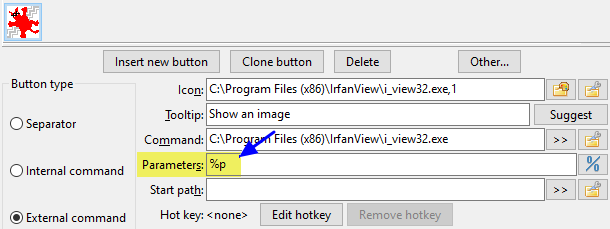

Variable will help us to when configurating toolbar buttons or setting file association action.
We will basically use them when it's time to provide a parameter to command based on the current selected file(s), directory where we are and other things like that related with the context of what we're displaying in the panels.
Here is an easy example. The person configured a button to launch Irfanview with the variable %p has the parameter.
When the person will click that button, it will launch Irfanview with the variable %p be substituted by the current selected file in the active panel.
That's what variables described in this page are all about.
As you will see, most of them are beginnng with the percent sign %.

These are the basic variables that may be used and that are related with the current selection.
By default, all the resulting values are quoted. If you need them unquoted, see the section Quotation in result or not.
For each one, the example is given assuming we're pointing the file C:\Users\UserName\Desktop\comment.png.
| Basic variables | |
|---|---|
| Variables | What it stands for |
%p |
Complete filename, path+filenameExample: %p = "C:\Users\UserName\Desktop\comment.png" |
%f |
Just filename, including extensionExample: %f = "comment.png" |
%d |
Only path, excluding trailing path delimiterExample: %d = "C:\Users\UserName\Desktop" |
%z Version 1.0.0 + |
Name of last directory in pathExample: %z = "Desktop" |
%o |
Just filename without extensionExample: %o = "comment" |
%e |
Just the extension, without the periodExample: %e = "png" |
%v |
Relative filename referenced to the current active directory This is pertinent for example if you've invoke the internal command cm_FlatView. If we've done a flat view from directory "C:\Users\UserName", the %v will result in "Desktop\comment.png" |
Following the variable letter mentionned above, we may add another letter to the previous one to add precision to what we want to use.
For each one, the example is given assuming:
In left panel we're pointing the file "C:\LeftFolder\File.lft"
In right panel we're pointing "C:\RightFolder\File.rgh"
The current active panel is the right one.
| Basic suffix | |
|---|---|
| Suffix | What it stands for |
s |
The source or active panel (no matter if it's left or right)Example: %ps = "C:\RightFolder\File.rgh" |
t |
The target or inactive panel (no matter if it's left or right)Example: %pt = "C:\LeftFolder\File.lft" |
l |
Left panelExample: %pl = "C:\LeftFolder\File.lft" |
r |
Right panelExample: %pr = "C:\RightFolder\File.rgh" |
|
p |
Both panel, active first, then a space, then the inactive secondExample: %pp = "C:\RightFolder\File.rgh" "C:\LeftFolder\File.lft" |
b |
Both panel, left one first, then a space, then the right oneExample: %pb = "C:\LeftFolder\File.lft" "C:\RightFolder\File.rgh" |
If we currently have many file selected, we may add a suffic to the previous mentionned one to precise which one we want to use.
For each element of table, we're assuming in the source panel is pointing "C:\temp\" and we've selected twenty six files named like "FileA.txt", "FileB.txt", etc. up to "FileZ.txt".
| Numbered suffix | |
|---|---|
| Suffix | What it stands for |
0 |
The file under cursorExample: %ps0 = "C:\temp\FileY.txt" |
1 |
The first selected fileExample: %ps1 = "C:\temp\FileA.txt" |
2 |
The second selected fileExample: %ps2 = "C:\temp\FileB.txt" |
3 |
The third selected fileExample: %ps3 = "C:\temp\FileC.txt" |
21 |
The twenty-first selected fileExample: %ps21 = "C:\temp\FileU.txt" |
Sometimes when we pass parameters to an executable we need to include something before the filenames.
Some other times we want to include something just before and just after the filenames.
Please note that the following will apply to each and individual selected item.
For each element of table, we're assuming we're currently in "C:\Windows\Fonts" with three file selected named "courrier.ttf", "fixedsys.ttf" and "terminal.ttf".
| Prefix and postfix | |
|---|---|
| Prefix and postfix | What it stands for |
{} |
One set of braces will result in adding the text between the braces before each and every selected itemsExample: %fs{+} = "+courrier.ttf" "+fixedsys.ttf" "+terminal.ttf" |
{}{} |
Two sets of braces will result in placing text between the braces before and after respectively in each and every selected items.Example: %fs{[}{]} = "[courrier.ttf]" "[fixedsys.ttf]" "[terminal.ttf]" |
Previously we've indicated variables related with the current selected items inside the panel.
But we may also use the variable %D to indicate we want to refer to the directory name of a panel.
To that variable we may add the same suffix letter as mentionned above to precise wich panel we want to refer to.
For each one, the example is given assuming:
In left panel we're in "C:\Reference"
In right panel we're pointing "E:\Work"
The current active panel is the right one.
| Path of panels | |
|---|---|
| Variable | What it stands for |
%D |
Alone, with no suffix, will return the path of the current active panelExample: "E:\Work" |
%Ds |
Directory of the current active or source panel (no matter if it's on left or right)Example: "E:\Work" |
%Dt |
Directory of inactive or target panel (no matter if it's on left or right)Example: "C:\Reference" |
%Dl |
Directory of left panelExample: "C:\Reference" |
%Dr |
Directory of right panelExample: "E:\Work" |
%Z Version 1.0.0 + |
Alone, with no suffix, will return the last directory name of path of the current active panelExample: "Work" |
%Zs Version 1.0.0 + |
Last directory name of path of the current active panel (no matter if it's on left or right)Example: "Work" |
%Zt Version 1.0.0 + |
Last directory name of path of inactive panel (no matter if it's on left or right)Example: "Reference" |
%Zl Version 1.0.0 + |
Last directory name of path of left panelExample: "Reference" |
%Zr Version 1.0.0 + |
Last directory name of path of right panelExample: "Work" |
As you've seen previously, for historic and legacy reason, DC will return the result quoted.
This was useful initially when there were spaces in filename and we wanted to pass filename as parameters and we wanted the whole thing to work.
But as new variables were added, it was obvious that we needed a way to have unquoted result. Basic example is commonly when we want to concatenate a source filename, but just the filename with no extension, with a new specific extension we'll spcify ourself on the line.
So instead of adding new variables that would return the same thing but unquoted, we may still use the same variables for the same meaning but just have to set prior on the line of parameter something like %"0 to indicate to DC that from now on, to the end of the line we're evaulating, do not quote the result.
Basically we'll have:
%"0 : from this position, resulting filename will be unquoted%"1 : from this position, resulting filename will be quoted%" : also accepted to restore the default which is to have result quotedThe following table gives us an example in situation we're we've selected a file named "Client List.mdb" and the result of the various combinaison of quoted/unquoted string.
| Examples of quotation or not | |
|---|---|
| Expression | Result |
%o.zip |
"Client List".zip |
%"0%o.zip |
Client List.zip |
%"0"%o.zip" |
"Client List.zip" |
%"0"%o.zip" %"1%f |
"Client List.zip" "Client List.mdb" |
As you've seen previously, for historic and legacy reason, when DC returns a path, it will be without trialing path delimiter.
This could be change by using a variable that will determine if the path variable that follows on the line will be with trailing path delimiter or not.
Basially we have:
%/0 : the returned path will be without trailing delimiter%/1 : the returned path will be with trailing delimiter%/ : also accepted, default, the returned path will be without trailing delimiterThe following table gives us an example in situation we're we've selected the directory "C:\Users\UserName\Desktop" and the result of the various combinaison of trailing path variable:
| Examples of trailing path variable | |
|---|---|
| Expression | Result |
%D |
"C:\Users\UserName\Desktop" |
%/0%D |
"C:\Users\UserName\Desktop" |
%/1%D |
"C:\Users\UserName\Desktop\" |
%/%D |
"C:\Users\UserName\Desktop" |
Some application will accept a single file name as a parameter and assumed this file is a text file containing a list of file names.
DC proposes us variables that will create a temporary text file with the list of all specified selected items and the file name of the temporary created file will we substituted to the variable.
| List of files variable | |
|---|---|
| Expression | Description |
%L |
File name of file list of selected items with the complete file name (path + file name) |
%F |
File name of file list of selected items with just the file name |
%R |
File name of file list of selected items with just their relative path name |
By default, the above mentionned file names inside the file list are unquoted. But there is a suffix you may add to change that if required.
Also, there are suffixes to specify if you want this file list to be coded in UT8 or UTF16.
| Suffix to list of files variable | |
|---|---|
| Expression | Description |
Q |
File names in the list will be quoted |
U |
List will be coded in UTF8 format |
W |
List will be coded in UTF16 format |
You may also add another suffix to specify from which panel the file list is required using the same suffix letter mentionned earlier.
Here are example of what is possible:
| Combinaison of suffix to list of files variable | |
|---|---|
| Expression | Description |
%LQt |
Complete filenames, quoted with selected files from target panel |
%FUs |
Just filenames, int UTF8 format, with selected files from source panel |
%RQW |
Filenames with relative path, quoted, in UTF16 format, files for source (default) |
You may specify in a parameter if you want the command-line you're configuring has to be executed in terminal.
To do so you'll use the %t variable.
| Execute in terminal | |
|---|---|
| Expression | Description |
%t0 |
Run in terminal and request to close it at the end |
%t1 |
Run in terminal and stay open at the end |
Here are two variables useful to show message and request to provide parameter on-the-fly with a suggested default value:
| Interaction | |
|---|---|
| Expression | Description |
%[message to show] |
Will show a message box with the text specified between brackets |
%[message;default_val] |
Will prompt user to enter a value with the default value for it |
Example of interaction:
| Example of interactions | |
|---|---|
| Expression | Description |
%[Make sure ThisFile.ext is closed!] |
Will show the message "Make sure ThisFile.ext is closed!" prior to execute action. |
%[Enter WIDTH value for image conversion;1024] |
Will prompt user to enter a value by showing the text "Enter WIDTH value for image conversion" and by default, suggested value is 1024 but user may type something else. The result of what the user has typed will substitute in the command line at the position where the "%[query;default]" expression was written. |
In this final section we shows the variables that haven't been presented yet.
| Miscellaneous variables | |
|---|---|
| Expression | Description |
%% |
Will be replaced simply by a single % sign |
%# |
From this position, the # sign will be treated as the % |
#% |
From previous mentioned state, will make % to be treated as the variable prefix |
%? |
Will show command line about to be executed. |
The utility of the %% is when you need to have a % sign in your parameters but that you don't want to have it substituted by something else because it would be followed by a letter for example and result in an actual valid variable.
The %? variable is particularly helpful when you're configuring a new tool button for example and you want to make sure about what will be used as the substituted parameter.
With the %? DC let you see the actual command and parameter that will be used to launched something.
More than that, you may even change something at the last minute when launching something.
This is particularly helpful when you're unsure of the parameters to be passed to the application you're targeting an action with.
Sometimes the combination of the percent sign and a letter of the variable might interfere with system variable.
For example, if you type %os%ot thinking it will be substituted with just the concatenation of file extensions of the active and inactive panels, you might be surprised to discover that it might not work under Windows.
The sequence %os% will often be substituted by the operating system name as %os% is a system variable representing the operating system name.
So this is where the %# is helpful.
In such example, you will type %##os#ot.
The %# instructs DC that from now on, the # is now the percent sign equivalent so this way, it won't interfere with possible system variables.
This is rarely needed but you'll be happy to know it exists if required!
Then, if required, #% will restore back the % to be the actual percent sign for variable.
Nothing new in this section, but let's put together into just ONE table a summary of all the supported variables and their meaning.
| Miscellaneous variables | |
|---|---|
| Expression | Description |
%p | the complete file name, including path |
%f | just the file name, with its extension |
%d | just the path |
%o | just the file name without its extension |
%e | just the file extension without the dot |
%v | the relative file name referenced to current active directory |
s | suffix for source or active panel (example: %ps) |
t | suffix for target or inactive panel (example: %pt) |
l | suffix for left panel (example: %pl) |
r | suffix for right panel (example: %pr) |
p | suffix for both panels, active first, inactive second (example: %pp) |
b | suffix for both panels, left first, right second (example: %pb) |
1 | first selected file (example: %ps1) |
2 | second selected file if any (example: %ps2) |
3 | third selected file if any (example: %ps3) |
21 | twenty-first selected file if any (example: %ps21) |
{prefix} | {} mentioned once, will set the prefix to add prior file name (ex: %f{+}) |
{prefix}{suffix} | {} mentioned twice, will set prefix and suffix, prior and after file name (ex: %f{[}{]}) |
%D | default, the path of the active (source) panel |
%Ds | specifically, the path of the active (source) panel |
%Dt | the path of the inactive (target) panel |
%Dl | the path of the left panel, no matter which one is active |
%Dr | the path of the right panel, no matter which one is active |
%"0 | from this place, resulting file name will be unquoted |
%"1 | from this place, resulting file name will be quoted |
%" | also accepted from resulting file name to be back quoted |
%/0 | default, the returned path will be without trailing delimiter |
%/1 | the returned path will be with trailing delimiter |
%/ | also accepted, default, the returned path will be without trailing delimiter |
%L | file name of file list of selected items with just the complete file name (path + file name) |
%F | file name of file list of selected items with just the file name |
%R | file name of file list of selected items with just their relative path name |
Q | suffix for %L, %F or %R to request quoted filenames |
U | suffix for %L, %F or %R to request UTF8 file format for list |
W | suffix for %L, %F or %R to request UTF16 file format for list |
%t0 | run in terminal and request to close it at the end |
%t1 | run in terminal and stay open at the end |
%[message to show] | will show a message box with the text specified between brackets |
%[message;default_val] | will prompt user to enter a value with he suggested value for it |
%% | will be replaced simply by a single % sign |
%? | will show command line about to be executed |
%# | from this position, the # sign will be treated as the % |
#% | from previous mentioned state, will make % to be treated as the variable prefix |
Originally created by Rustem (dok_rust@bk.ru)